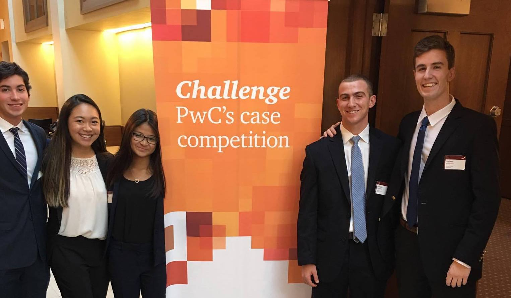

I wanted to go outside of my comfort zone and learn how it was to truly solve real-world business problems through this client-services case competition, hosted by PwC.

What is the competition?
We were given information on a fictitious company, Country's Best, which is a family grocery store that considered moving to automation to reduce labor costs. PwC supplied us with little, but essential, information on the grocery store and the industry, as well as a letter from the client detailing what they need from us. From this information, my team and I had to act as consultants and conducted reserach on automation and a financial analysis on the company and presented our recommendations to a panel of "Board of Directors" to lead the company on the best possible business path. With that, our ultimate goal was to answer the following questions for the store: Can they expand by 20% by 2025? Will implementing automated checkout systems cut labor costs? And lastly, what are other alternatives the company can explore in efforts to increase revenue?
What did we do?
- Automation Analysis - we conducted research on automation to see the cost impact and customer satisfaction of automated cashiers. Because this is a family company, we found that while automation is cost-effective, the strategy described in the Client Letter of replacing the majority of cashiers with machines will damage the company’s atmosphere.
- Financial Analysis - Next, we did a breakdown of the cost analysis of self-checkout machines and the full time worker equivalent. We found that at least one FTE, would cover most of the expense of a machine. Additionally, we analyzed the given financial statements to find why the company was losing so much money.
- Coming up with recommendations - we concluded that the best possible option for the company was to move to partial automation. Self-checkout is the emerging frontier of retail. Moving to partial automation would maintain the cost-effective benefits of tech without sacrificing atmosphere of a "family-oriented" grocery store and it also serves as a low-risk strategy to test automation’s compatibility with County Best’s profit model.
- Short term marketing recommendation - Customer Loyalty Program and coupons - this can encourage new customers to support their business.
- Long term marketing recommendation - Utilize social media platforms to improve engagement between Country’s Best and the community it supports and start a Community Outreach program.
- Our conclusion: Projecting into the future, a number of signs, such as projected minimum wage increases and industry-wide shifts toward technology, all point to automation as a cost-effective strategy. Saving money on labor costs will contribute to the continued growth of Country’s Best. Our analysis shows that partial automation, complemented by our additional recommendations will allow Country’s Best to expand while continuing to uphold its core values.
- By the time we were finished with our presentation and our analyses, we submitted the slide deck and a short 2 page summary of our research and conclusion.
Overall, this competition was such a great experience, and I am so happy that I was a part of such a fantastic team. We all worked so well together and ended up winning the whole competition. We illustrated our creativity through our slide deck, utilized all our resources, and clearly demonstrated our knowledge of the subject matter throughout the presentation. Thank you, PwC, for hosting such a great competition.